第3章 冗余数系（Redundant Number Systems）
本章导读
第 2 章结尾埋的伏笔在这里展开：普通二进制加法慢的根源是进位传播（carry propagation）——最低位的进位最坏要穿过全部 \(k\) 位。冗余数系（redundant number system）用”一个数有多种编码”的自由度，把进位链彻底斩断，实现常数时间加法。代价是编码浪费与转换、比较变复杂。它是乘法器部分积压缩（第 8、11 章）和 SRT 除法（第 14 章）的理论地基。
3.1 进位问题（Coping with the Carry Problem）
进位传播是加法器的”光速限制”。应对策略无非三类：
- 加快进位本身：超前进位（carry-lookahead）、进位跳过（carry-skip）等——第 6、7 章的主角，它们不改变数制，只是让进位传得更快；
- 检测进位完成：异步设计里让加法器自己报告”我算完了”，平均延迟远小于最坏延迟（第 5.4 节）；
- 消灭进位传播：换用冗余编码，让每个数位的和只依赖于相邻少数几位——本章的正题。
先看一个十进制例子，把”消灭进位”这件事讲具体。取基数 \(r=10\)、标准数位集 \([0,9]\)，做加法时不去传播进位，只是把每位的位置和（position sum）\(p_i = x_i + y_i\) 原样写下来：
\[ \begin{array}{cccccc} & 5 & 7 & 8 & 2 & 4 & 9\\ + & 6 & 2 & 9 & 3 & 8 & 9\\ \hline & 11 & 9 & 17 & 5 & 12 & 18 \end{array} \]
位置和落在 \([0,18]\)。只要允许数位集取 \([0,18]\)，这一次加法确实”无进位”。但只能做一次——下一次相加，位置和会跑到 \([0,36]\)，数位集就不够用了。
出路是把 \([0,36]\) 拆成”传递（transfer）“与”中间和（interim sum）“两部分：
\[ [0, 36] = 10 \times [0, 2] + [0, 16],\qquad [0,16] + [0,2] = [0,18] \]
即把位置和 \(p_i\) 写成 \(p_i = 10\,t_{i+1} + w_i\)，其中传递数位 \(t_{i+1} \in [0,2]\)、中间和 \(w_i \in [0,16]\)；最终本位结果 \(s_i = w_i + t_i\) 仍落在 \([0,18]\)，不再产生新的传递。进位因此最多向左走一位，与字长无关。
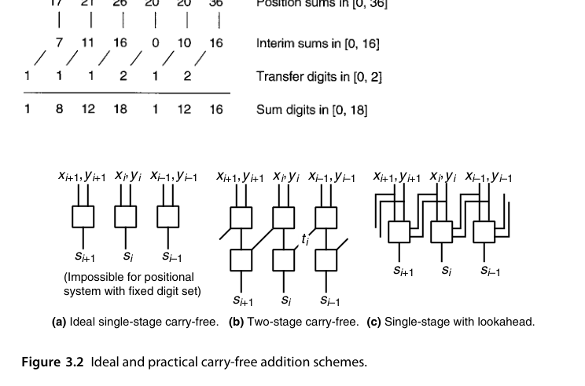
需要强调的是：真正”单级完成、完全不看邻居”（图 3.2a）的加法，在固定数位集的位置数制里在数学上不可能——因为最高位的进位总要去某个地方。工程上能拿到的最好结果是图 3.2b 的”两级”方案，本书习惯上仍称它为无进位（carry-free）加法。若愿意付出稍复杂的组合逻辑，还可以把相邻两位的信息合并起来直接算出 \(s_i\)（图 3.2c），用逻辑复杂度换掉一级延迟。
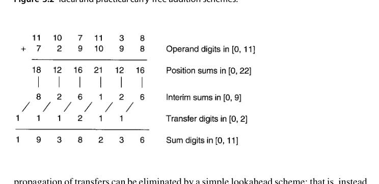
\([0,18]\) 显然浪费——19 个数位值里只有 10 个是必需的。事实上基数 10 只需数位集 \([0,11]\)（仅多一个值）就够了，如图 3.3。于是自然的问题是：无进位加法到底需要多少冗余？ 这个问题留到 3.5 节给出严格的充要条件。
第三条路是”空间换时间”在数制层面的体现：信息论上，\(k\) 位冗余编码能表示的状态数多于 \(2^k\) 个不同的数，多出来的编码空间就是吸收进位的缓冲垫。
3.2 计算机算术中的冗余（Redundancy in Computer Arithmetic）
冗余度可以用一个简单指标刻画：基数 \(r\)、数位集合含 \(\alpha\) 个不同值，则编码空间为 \(\alpha^k\)，不同数值最多 \(r^k\) 个，冗余比 \(\approx (\alpha/r)^k\)。最常见的例子：
- 进位保存（carry-save）表示：数位集合 \(\{0,1,2\}\)（基数 2），一个数由 (sum, carry) 两串比特共同表示。它是第 8 章多操作数加法的基石；
- 带符号数字（signed-digit, SD）表示：数位集合 \(\{-\alpha,\dots,\alpha\}\)，如基数 2 的 \(\{\bar{1},0,1\}\)。
进位保存表示最早由 Metze 在 1959 年提出，是冗余思想在工业界最成功的落地。用 2 比特编码数位集 \([0,2]\)：
\[ 0:(0,0),\quad 1:(0,1)\ \text{或}\ (1,0),\quad 2:(1,1) \]
于是一个”存储进位（stored-carry）数”实质上是两个二进制数：所有编码低位组成的串，与所有编码高位组成的串。把第三个二进制数加进来时，只要按位独立地跑一排全加器，把和位留在原位、进位位左移一位，就又得到两个串——进位被”保存”下来，而不是被传播掉。这就是 carry-save 名字的由来。
关键收益在于延迟的摊销：累加 \(n\) 个数，若每次都用普通进位传播加法器，要付 \(n\) 次 \(O(k)\) 的进位延迟；用 carry-save 则只需 \(n\) 次 \(O(1)\) 的全加器延迟，最后一次才做一次真正的进位传播加法（CPA）。这就是树形乘法器的基本算账方式（第 11 章）。
由于一排全加器把 3 个二进制数压成 2 个、且总和不变，它也被称作 3:2 压缩器或 (3; 2) 计数器——“计数器”这个名字很贴切：全加器就是在数三个输入里有多少个 1，并把结果写成 2 位二进制。
3.3 数位集合与数位集合转换（Digit Sets and Digit-Set Conversions）
关键问题：给定数位集合，加法的”进位”能被限制在多少位之内？答案取决于数位集合的大小。核心洞察：
- 基数 \(r\)、数位集合为连续区间 \([-\alpha, \beta]\) 时，若 \(\alpha + \beta \ge r + 1\)（即数位集合足够冗余），则存在完全无进位（carry-free）加法算法；
- 若 \(\alpha + \beta = r\)（如 carry-save 的 \(\{0,1,2\}\)：\(0+2=2=r\)），进位最多传播一位——称为受限进位（limited-carry）加法。
严格的充要条件比上面这两条经验法则更细一些（3.5 节给出）：真正能支持无进位加法的，是 \(r>2\) 且冗余度 \(\rho \ge 3\)，或 \(r>2\)、\(\rho=2\) 且 \(\alpha\neq1\)、\(\beta\neq1\)；其余情形（\(r=2\)，或 \(\rho=1\)，或 \(\rho=2\) 但 \(\alpha\) 或 \(\beta\) 等于 1）只能做到受限进位。二进制是最难伺候的基数——这也就是为什么实用的无进位加法多出现在高基除法（第 14 章）而非整数加法器里。
“进位最多走一位”意味着所有数位的加法可以同时完成，总延迟与字长无关——\(O(1)\) 对比行波进位的 \(O(k)\)。32 位、64 位、128 位，延迟一样。这就是冗余数系的价值。
数位集合转换（digit-set conversion）——把一种冗余编码翻译成另一种——通常可以用每位一个小的查找表/组合逻辑完成，是冗余运算部件之间的”插头标准件”。
转换的基本套路是从最低位开始的串行过程：把旧数位改写成一个合法的新数位，外加一个向高位传递的转移量（transfer，可以是进位也可以是借位）。以基数 10、\([0,18] \to [0,9]\) 为例（原书例 3.1），反复把 \(\ge 10\) 的数位写成 \(10\times 1 + (\text{余数})\)：
\[ 1\,1\;\,9\;\,17\;\,10\;\,12\;\,18 \;\longrightarrow\; 1\,2\;\,0\;\,8\;\,1\;\,3\;\,8 \]
注意每一步产生的进位可能让高位又越界，所以最坏情况下要一路扫到最高位——转换本质上就是一次进位传播。
但冗余数位集会给出惊喜。仍以基数 2 的 \([0,2] \to [-1,1]\) 为例（原书例 3.4）：把每个 2 写成 \(2\times1 + 0\)，把每个 1 写成 \(2\times1 - 1\)，于是所有中间数位都落在 \([-1,0]\)，都能无条件吸收一个 incoming 进位 1：
\[ \begin{array}{cccccc} \text{原数} & 1 & 1 & 2 & 0 & 2 & 0\\ \text{中间数位}\in[-1,0] & -1 & -1 & 0 & 0 & 0 & 0\\ \text{传递数位}\in[0,1] & 1 & 1 & 1 & 0 & 1 & 0\\ \hline \text{结果}\in[-1,1] & 1 & 0 & 0 & 0 & 1 & 0 \end{array} \]
这个转换没有进位传播，一位延迟完成。判据很朴素：只要改写规则能保证中间数位留出足够的”吸收余量”，转换就能并行化。这正是冗余度 \(\rho\) 的用处——它量化了余量有多大。
另一个值得记住的性质：冗余数位集下同一个数可能有多种合法表示，转换结果不唯一（原书例 3.3 中就出现了两处可自由选择改写方式的地方）。这既是自由度的来源，也是”相等性判断变复杂”的根源（3.6 节）。
3.4 广义带符号数字表示（Generalized Signed-Digit Numbers）
把以上想法统一起来：GSD 表示 = 位置数制 + 允许带符号的数位集合 \(D = \{-\alpha, \dots, \beta\}\)。
- 当 \(\alpha = \beta = 0\)：退化为普通无符号位置数制；
- 当数位集合关于 0 对称（\(\alpha = \beta\)）：得到对称 SD 表示，取负只需逐位取反，非常优雅；
- 最小冗余 vs. 最大冗余：满足无进位加法的最小集合（省编码位）与最大对称集合（算法最简单）之间存在连续谱系，设计时按需取材。
历史上，Avizienis 在 1960 年代初定义了普通带符号数字（ordinary signed-digit, OSD）表示：基数 \(r>2\)、对称数位集 \([-\alpha,\alpha]\)，其中 \(\lfloor r/2\rfloor + 1 \le \alpha \le r-1\)。它至少含 \(2\lfloor r/2\rfloor + 3\) 个数位值，因而必然冗余。后来出现的 GSD 把数位集放宽到任意 \([-\alpha,\beta]\)，把实践中所有冗余表示都纳入同一框架。
GSD 数系的核心参数是冗余度（redundancy index）：
\[ \rho = \alpha + \beta + 1 - r \]
即数位集大小超出非冗余所需 \(r\) 个值的量。\(\rho = 0\) 是非冗余，\(\rho = 1\) 是最小冗余（binary stored-carry \([0,2]\) 与 BSD \([-1,1]\) 都在此列），\(\rho \ge 2\) 是非最小冗余（如基数 4 的 \([-7,7]\)、基数 2 的 \([0,3]\)）。
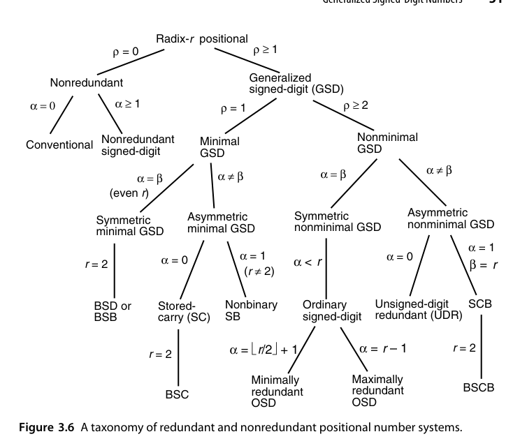
有了数位集，还得给每个数位值选一套二进制编码，而这个选择会实实在在影响电路。以 BSD（\(r=2\)，数位集 \([-1,1]\)）为例，至少需要 2 比特，可选编码包括：
- \((s, v)\) 码：符号位 + 幅值位，直观但运算逻辑啰嗦；
- 2 的补码：把两位当成一个 2 位补码数，取值范围 \([-2,1]\)；
- \((n, p)\) 码：一根”负线”加一根”正线”，\((1,1)\) 视为 0 的替代表示或非法组合；
- 1-out-of-3 码：3 根线，多占一位但能检测部分存储/运算错误。
工程实践表明 \((n,p)\) 编码能同时简化硬件并减少门级数，是 BSD 运算部件的主流选择；1-out-of-3 则用面积换取可检错性（第 27 章容错算术会用到这种思路）。
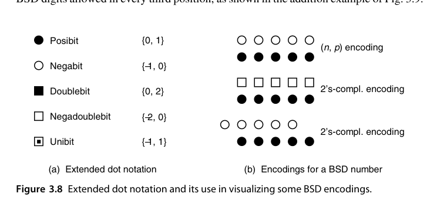
为了在图上表达这些带权重的比特集合，本书扩展了点记号：posibit（值域 \(\{0,1\}\)）、negabit（\(\{-1,0\}\)）、doublebit（\(\{0,2\}\)）、negadoublebit（\(\{-2,0\}\)）、unibit（\(\{-1,1\}\)）。一个 negabit + 一个 posibit 就是 \((n,p)\) 编码的 BSD；一个 negadoublebit + 一个 posibit 就是 2 位补码编码的 BSD。这些带权重的比特集合（weighted bit-set）编码被证明在冗余数的高效表示与运算中非常有用。
混合带符号数字（hybrid signed-digit）表示走的是中间路线：只在选定的若干位引入冗余。例如每 3 位允许一个 BSD 位，其余位保持标准二进制。
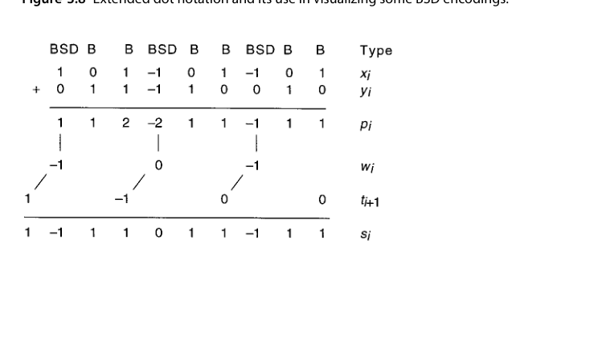
其加法过程是：先在标准二进制位上算 \([0,2]\) 的位置和、在 BSD 位上算 \([-2,2]\) 的位置和；再把 BSD 位置的和拆成中间和与传递数位（都在 \([-1,1]\)）。选择中间和取 \(1\)（或 \(-1\)）的前提，是确知低位不可能（或必然）送来 \(+1\) 的传递——判据只需看低一位的两个操作数比特是否都为 0。因此最坏进位传播被限制在一个分组内（从一个 BSD 位到下一个更高的 BSD 位）。
分组大小 \(g\) 就是一个调节旋钮：\(g\) 越大，BSD 位越少（BSD 位的加法单元比普通位复杂），硬件越省，但最坏进位传播距离越长。这是”速度 ↔︎ 成本”在冗余数系内部的一次再平衡。
把图 3.9 的 3 位分组从右往左看，它其实就是一个基数 8 的 GSD 系统，数位集为 \([-4,7]\)（从 \((-1\,0\,0)_2\) 到 \((1\,1\,1)_2\)）。换句话说，混合表示可以看作是某个高基 GSD 表示的一种编码方式（原书 Fig. 3.10 展示了这一点，以及去掉”非冗余位只允许 posibit”限制后得到的对称版本 \([-4,4]\)）。
编码效率的代价：\(k\) 位基数 2 的 SD 数需要 \(2k\) 个比特存储（每位 SD 数字要 2 bit）。冗余 = 双倍存储 + 双倍布线，这就是为什么冗余表示只出现在运算部件内部，而不会用作存储格式。
3.5 无进位加法算法（Carry-Free Addition Algorithms）
无进位加法的标准套路是两步走（以 GSD 为例）：
- 逐位求和并拆分：对每位计算位置和 \(p_i = x_i + y_i\)，拆成”传递和（transfer sum）“与” interim sum”——即决定向高位传一个进位数字 \(t_{i+1}\)，本位保留 \(w_i = p_i - r\cdot t_{i+1}\)；
- 最终相加：\(s_i = w_i + t_i\)，保证不再产生新进位。
第一步的选择规则（什么情况下传 +1、0 还是 -1）需要基于\(p_i\) 的区间判断，这就是数位集合必须足够冗余的原因——判断区间之间要有”安全间隙”。
把”不再产生新进位”写成不等式，就得到了数位集与传递数位范围之间的约束。设传递数位取自 \([-\lambda, \mu]\)，则必须同时满足
\[ -\alpha + \lambda \;\le\; p_i - r\,t_{i+1} \;\le\; \beta - \mu \]
左边是最小的中间和也仍能吸收一个 \(-\lambda\) 的入传递，右边是最大的中间和仍能吸收一个 \(+\mu\) 的入传递。化简即得传递数位范围的下界：
\[ \lambda \ge \frac{\alpha}{r-1},\qquad \mu \ge \frac{\beta}{r-1} \]
\(\lambda\)、\(\mu\) 确定后，把位置和 \(p_i\) 与一组常数 \(C_j\)（\(-\lambda \le j \le \mu+1\)）比较，\(C_j \le p_i < C_{j+1}\) 时取 \(t_{i+1} = j\)。
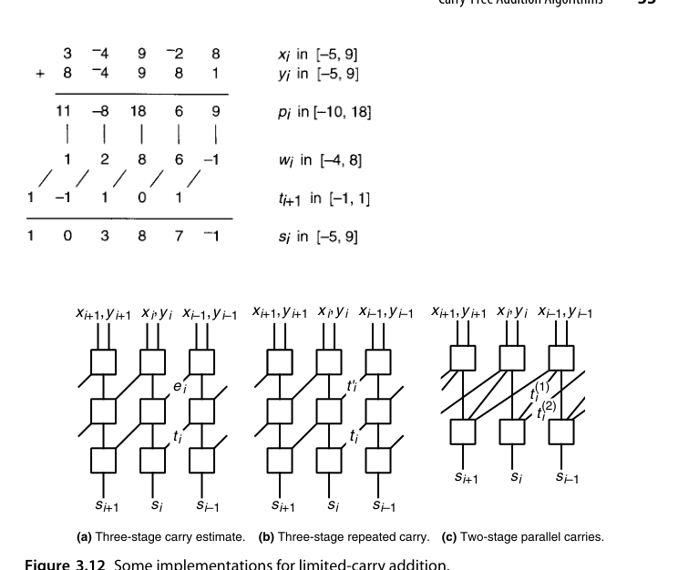
一个具体例子（原书例 3.5）：\(r=10\)、数位集 \([-5,9]\)。由上式 \(\lambda \ge 5/9\)、\(\mu \ge 1\)，取最小整数值 \(\lambda_{\min} = \mu_{\min} = 1\)，即传递数位 \(\in [-1,1]\)。位置和 \(p_i \in [-10, 18]\)，比较常数允许取
\[ -4 \le C_0 \le -1,\qquad 6 \le C_1 \le 9 \]
直观解释：\(p_i = 6\) 时取传递 1，剩下的中间和是 \(-4\)，仍处在 \([-5,9]\) 内、能吸收任意 \([-1,1]\) 的入传递；而 \(p_i \ge 9\) 时必须传 1，否则中间和会越界。中间地带的 \(C_0\)、\(C_1\) 有多种合法取法，给逻辑综合留出了优化空间。若把 \(p_i\) 表示为 6 位补码 \(abcdef\)，取 \(C_0=-4\)、\(C_1=8\) 时生成逻辑为
\[ g_{-1} = a(\bar{c} \lor \bar{d}),\qquad g_{1} = \bar{a}(b \lor c) \]
不过这套”完全无进位”算法并非万能。原书证明它当且仅当下面两组条件之一成立时可用：
\[ \text{(a) } r>2,\ \rho \ge 3;\qquad \text{(b) } r>2,\ \rho = 2,\ \alpha \neq 1,\ \beta \neq 1 \]
也就是说，\(r = 2\)、\(\rho = 1\)，以及 \(\rho = 2\) 但 \(\alpha\) 或 \(\beta\) 等于 1 的情形（即绝大多数二进制冗余表示）用不了无进位算法，只能用下面的受限进位算法。
受限进位加法算法在无进位算法中间插了一步”范围估计”：
- 计算位置和 \(p_i = x_i + y_i\)；
- 把 \(p_i\) 与一个常数比较，得出传递数位的二值范围估计 \(e_{i+1}\)（“低”或”高”）；
- 结合 \(e_i\) 把 \(p_i\) 拆成传递 \(t_{i+1}\) 与中间和 \(w_i = p_i - r t_{i+1}\)；
- \(s_i = w_i + t_i\)。
多出来的第 2 步只增加一级比较器延迟，却让算法能覆盖 \(\rho=1\) 的最小冗余表示。
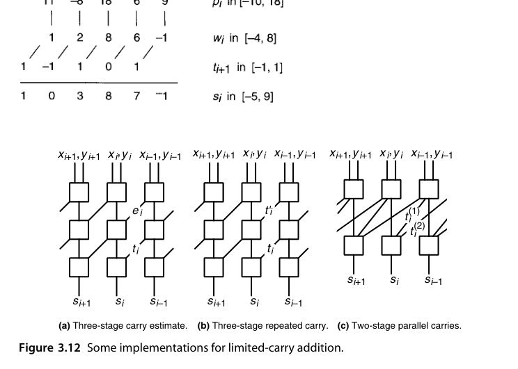
三种实现各有取舍：图 3.12a 用”估计”提前一步预判入传递的范围，逻辑最直观；图 3.12b 干脆再跑一遍传递生成/相加，用面积换掉估计逻辑的不确定性；图 3.12c 则从 \(i-2\) 级直接把 \(t^{(1)}_{i+1}\)、\(t^{(2)}_{i+2}\) 两路传递并行送到第 \(i\) 位，把三级压成两级——代价是第 \(i\) 位的逻辑要同时看 \(x_{i},y_{i},x_{i-1},y_{i-1},x_{i-2},y_{i-2}\) 六个输入，扇入与布线明显变重。
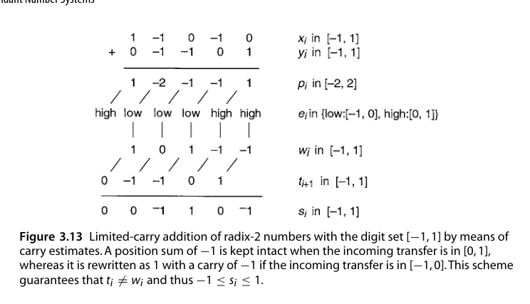
BSD 的受限进位加法（原书例 3.6）：\(r=2\)、数位集 \([-1,1]\)、\(\rho=1\)、\(\lambda_{\min}=\mu_{\min}=1\)。传递数位的”低/高”子区间分别是 \([-1,0]\) 与 \([0,1]\)，判据是 \(p_i \ge 0\) 时认为传递”高”。规则保证了 \(t_i \neq w_i\)（两者不会同时取到让和越界的组合），从而 \(-1 \le s_i \le 1\) 恒成立。
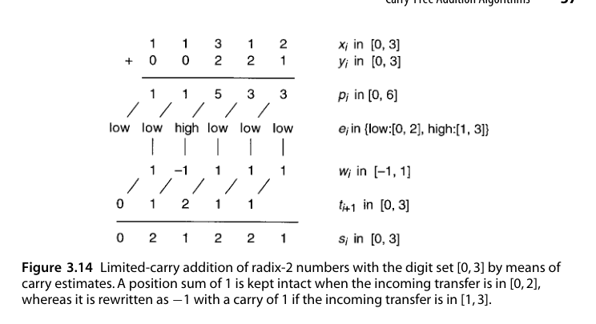
存储双进位（binary stored-double-carry）表示（原书例 3.7）：\(r=2\)、数位集 \([0,3]\)、\(\rho=2\)、\(\lambda_{\min}=0\)、\(\mu_{\min}=3\)。传递的”低/高”子区间是 \([0,2]\) 与 \([1,3]\)，判据为 \(p_i \ge 4\)。同一加法还可以用另外两种实现完成：
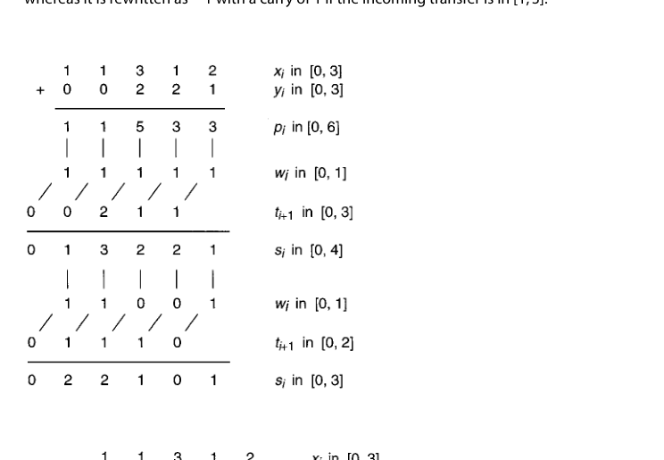
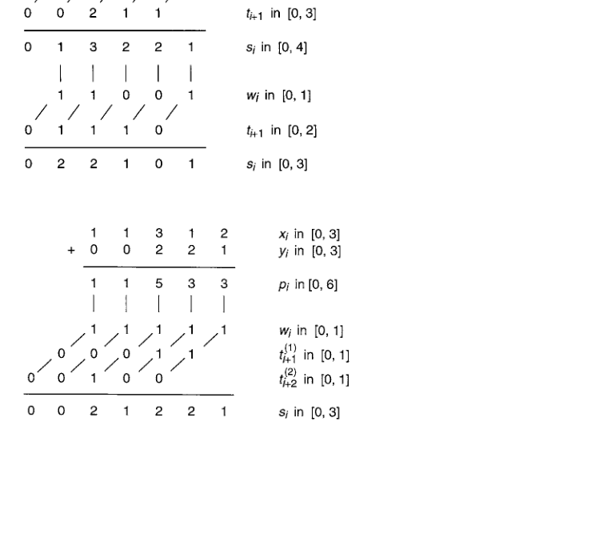
三种实现算的是同一个结果，差别只在”进位信息如何跨越两个数位级”。选哪一种是典型的后端决策：在门级延迟主导的工艺里，并行进位（少一级）胜出；在布线拥塞主导的场景里，估计法（连线最少、最规整）反而更优。
carry-save（受限进位）版本大家其实天天见：全加器（full adder）本身就是一个 3:2 压缩器——三个输入比特进来，(sum, carry) 两个比特出去，进位只给相邻高位，绝不远行。
最后，GSD 减法与加法几乎同构。对称数位集下，把减数的每一位取反就得到了 \(-y\) 的表示，随后照常做无进位/受限进位加法即可；非对称数位集（\([ -\beta, \alpha] \leftrightarrow [-\alpha,\beta]\)）的取负稍复杂，但同样有对应的无进位算法。
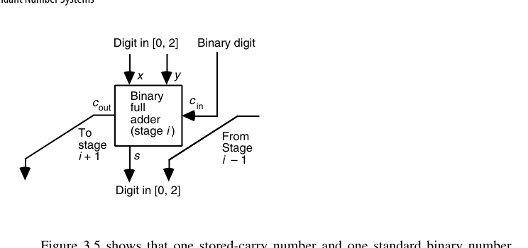
3.6 转换与支持函数（Conversions and Support Functions）
冗余数系的”阿喀琉斯之踵”：
- 冗余 → 非冗余转换：逃不开一次完整的进位传播（把 carry 串真正加进 sum 串）。所以冗余表示适合一长串运算的中间形态，只在最后转换一次——这正是树形乘法器的工作方式（第 11 章）；
- 符号检测与比较：冗余编码下”这个数是正是负”不再等价于看最高位，需要一次完整加法或专门的符号检测逻辑；
- 溢出检测：同样变复杂，需要扫描最高若干位。
BSD ↔︎ 有符号二进制的转换是最常用的一种，做法很巧妙：把 BSD 数的正数位（\(+1\)）与负数位（\(-1\)）拆成两个普通的二进制数，再做一次减法。
\[ \begin{array}{ccccc} \text{BSD} & 1 & -1 & 0 & -1 & 0\\ \text{正部} & 1 & 0 & 0 & 0 & 0\\ \text{负部} & 0 & 1 & 0 & 1 & 0\\ \hline \text{差} & & & & & \end{array} \]
若 BSD 数用的是 \((n,p)\) 编码，正部与负部就是现成的两根线，拆分零成本。编码选对了，转换就几乎是免费的——这是 3.4 节强调 \((n,p)\) 编码的又一个理由。
零检测、符号检测、溢出处理这三个”支持函数”在冗余域里各有各的麻烦：
- 零检测：GSD 下 0 可能有多种表示（基数 4 中 \(0\,0\,0\) 与 \(-1\,4\,0\) 都表示 0）。但若 \(\alpha < r\) 且 \(\beta < r\)，0 由全 0 向量唯一表示，相等性判断就退化成”做一次减法再查全零”，在这个常见的特例里反而简单。
- 符号检测：一般地，GSD 数的符号取决于它的全部数位——逐位传播判断慢，做快速超前判断电路又贵。即使在上述 \(\alpha,\beta < r\) 的特例下，符号等于最高非零数位的符号，仍要扫描所有数位才能找到它，最坏情况与一次完整进位传播同阶。
- 溢出处理：\(k\) 位相加会产生传出数位 \(t_k\)，而 \(t_k\) 是在”入传递未知”的最坏假设下算出来的，因此 \(t_k \neq 0\) 并不代表真的溢出。要判断溢出是否真实、并在不溢出时给出正确的 \(k\) 位结果，还得再做一次相当慢的检测与转换。
对原码和 2 的补码而言，符号判断只是”看最高位”这么一句话；在冗余域里它变成了一个 \(O(k)\) 的操作。这类”支持函数的退化”足以吃掉冗余带来的全部速度优势——这也是 GSD 至今主要活在专用系统与运算部件内部表示，而没有成为通用数据格式的根本原因。
让数据在冗余域里”尽量久地停留”。每一次冗余↔︎非冗余转换都要付出一次完整加法器的延迟，频繁转换会把冗余带来的速度优势吃得一干二净。
本章小结
- 冗余数系用编码空间换进位自由：无进位（\(O(1)\)）或受限进位（走 1 位）加法。
- carry-save 是最实用的冗余表示，全加器即 3:2 压缩器。
- 冗余域内运算快，但比较、符号判断、溢出检测贵；出入口各需一次转换。
- 记住两句话：中间结果留在冗余域，最后一刻再转换。
原书插图
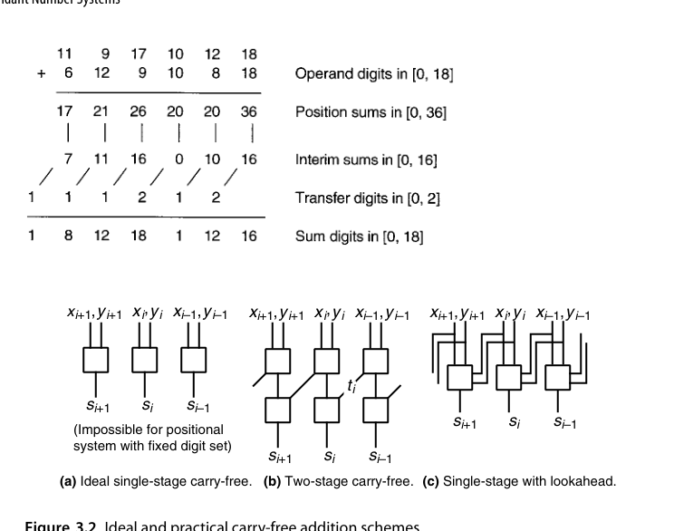
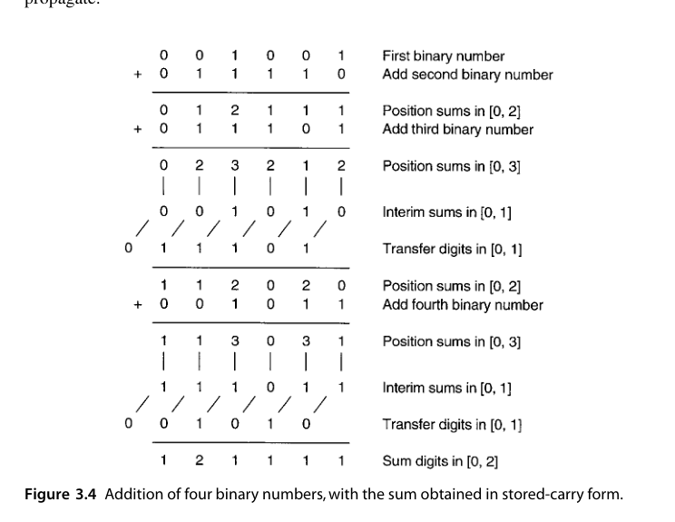
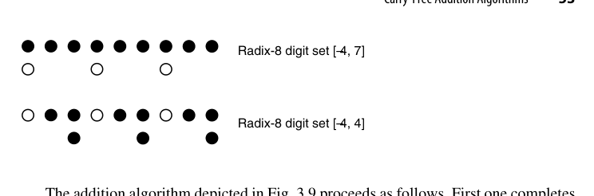